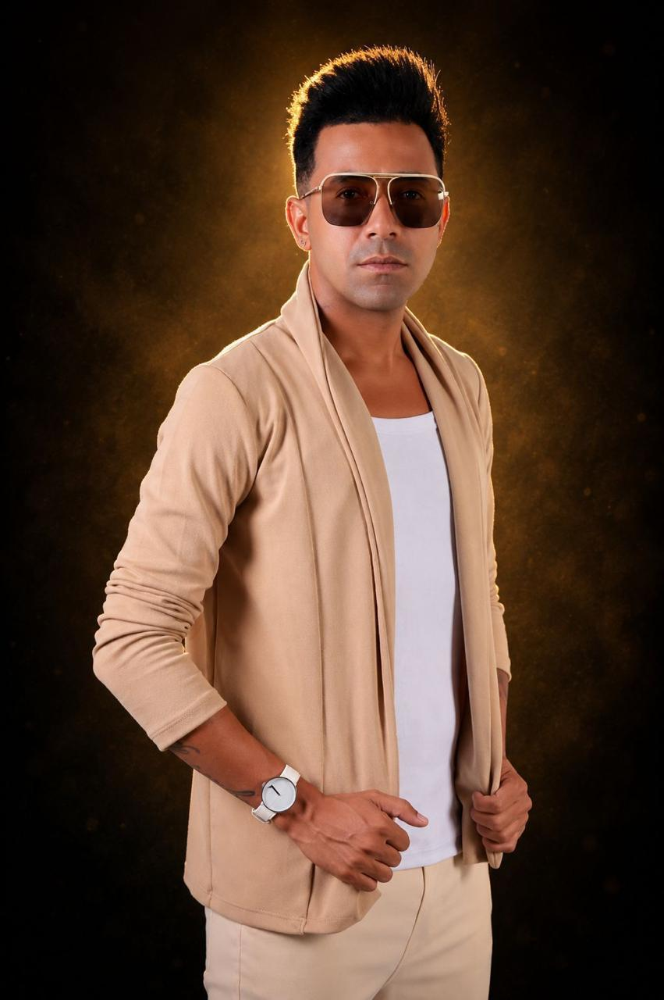

o amor em forma de música
Brega Romântico | Pernambuco
“O amor, a música e a emoção em um só lugar.”
quem canta essa história
Uma história que continua sendo cantada.
A Banda Shakespeare constrói sua trajetória através da música brega e de um repertório que reúne diferentes momentos do romantismo popular. Ao longo de seus lançamentos, a banda apresenta canções que exploram sentimentos, relacionamentos e experiências do cotidiano.
Seu catálogo reúne trabalhos lançados em diferentes momentos, incluindo o EP Mulher Sente, de 2023, e singles como Irreal e Abismo. Em 2022, a parceria com Luiza Ketilyn em Caso Perdido também passou a fazer parte de sua discografia registrada nas plataformas musicais.
Em 2026, a banda segue ampliando seu repertório com o lançamento de Além do Prazer, mantendo sua produção musical presente no ambiente digital e aproximando suas canções de novos ouvintes.
Ires Barreto da Silva
Italo Thiago Ribeiro da Silva
uma voz que persiste
Uma voz de carisma, força e persistência
Aos 25 anos, Ires Barreto da Silva encontrou na música uma forma de expressar sua paixão e construir sua própria história no brega romântico. Natural de Recife, Pernambuco, Ires canta movida pelo amor à música e pelo desejo de crescer e conquistar seu espaço no cenário musical.
Com uma personalidade marcada pelo carisma, pela gentileza e pela autenticidade, Ires acredita que seu diferencial está na maneira como se conecta com as pessoas. Para ela, cantar é mais do que uma profissão: é uma oportunidade de transmitir sentimentos, conquistar o público e seguir evoluindo em sua trajetória artística.
Mãe, Ires encontra nos filhos sua maior fonte de amor e motivação. Sua caminhada também foi marcada por desafios pessoais que contribuíram para a mulher que é hoje. Entre seus maiores sonhos estão conquistar a própria casa e alcançar estabilidade por meio da música, garantindo o sustento e um futuro melhor para seus filhos.
Com um estilo moderno, que transita entre o sensual e o casual, Ires busca construir uma imagem de cantora preparada para conquistar novos públicos e oportunidades. Seu objetivo é crescer na música, chegar ao topo e transformar seus sonhos em realidade, sempre guiada pela fé.
Ires Barreto da Silva. Uma cantora de carisma, personalidade e determinação, que segue construindo seu caminho no brega romântico com fé, coragem e o sonho de alcançar o topo, em nome de Jesus.
Instagram · @_irissilvaoficial
fé, identidade e ambição
Um novo astro do brega romântico
Aos 30 anos, Italo Thiago Ribeiro da Silva constrói sua trajetória no universo do brega romântico, guiado pela fé, pela identidade e pelo desejo de viver da música. Como ele mesmo define: “Eu não escolhi o universo musical, ele me escolheu.”
Natural de Pernambuco e ex-aluno do Colégio da Polícia Militar, Italo carrega consigo os valores de sua formação e uma personalidade marcada pela determinação, pelo profissionalismo e pela busca constante por evolução. Para ele, os obstáculos fazem parte da profissão e representam desafios que fortalecem sua caminhada no mercado musical.
Com uma identidade própria e o compromisso de entregar um trabalho profissional, Italo busca conquistar seu espaço na música, superando dificuldades financeiras e investindo na realização de seus projetos. Sua visão de sucesso está diretamente ligada às consequências de um trabalho bem feito: “A gente só colhe o que planta.”
Movido pelo amor a Deus, à família e pela vontade de alcançar seus objetivos, Italo sonha em consolidar sua carreira e se tornar um nome reconhecido no cenário musical. Seu propósito é seguir em frente com fé, autenticidade e profissionalismo, construindo uma história que represente não apenas um artista, mas também um ser humano de valores.
Italo Thiago Ribeiro da Silva. Um artista de identidade, fé e ambição, pronto para escrever seu nome na música.
nosso universo romântico
O catálogo abaixo reúne os singles e faixas mais conhecidas do projeto, com foco em títulos confirmados e títulos divulgados em plataformas digitais e redes sociais. Os lançamentos oficiais mais sólidos até o momento são “Caso Perdido” e “Além do Prazer”.
para o seu evento
Leve a energia, o romantismo e a música da Banda Shakspeare para o seu evento.
fale com a banda
Use este espaço para receber orientações sobre agenda, eventos e parcerias. O canal pode ser atualizado com contato, e-mail ou WhatsApp oficial quando confirmado.
Para contratar a Banda Shakspeare ou falar sobre agenda, apresentações e oportunidades, o canal mais direto continua sendo o Instagram oficial e o YouTube da banda.
siga a história de perto